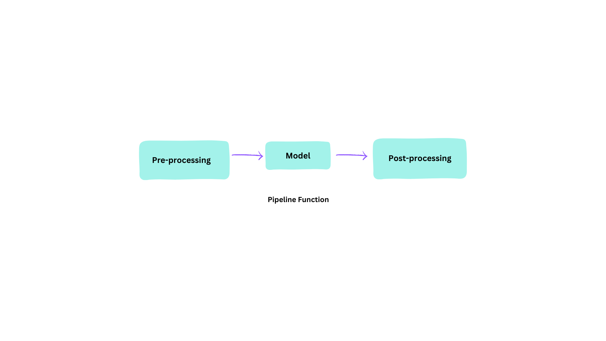
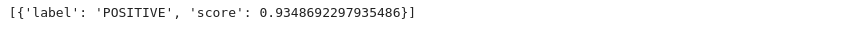
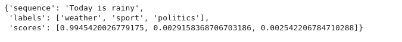
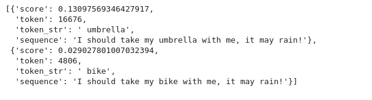
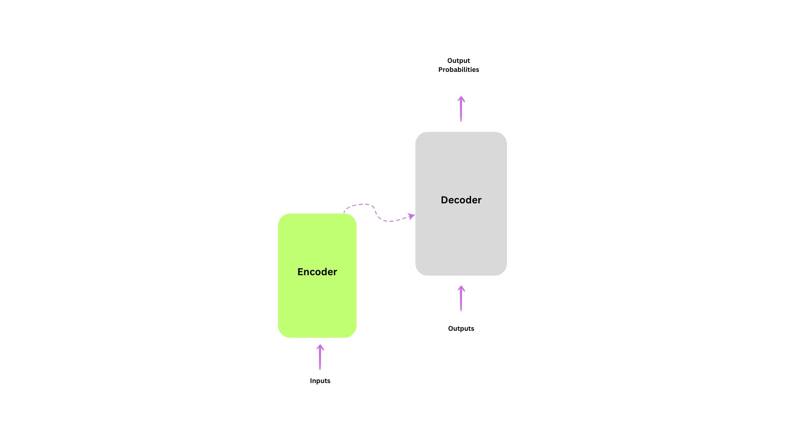
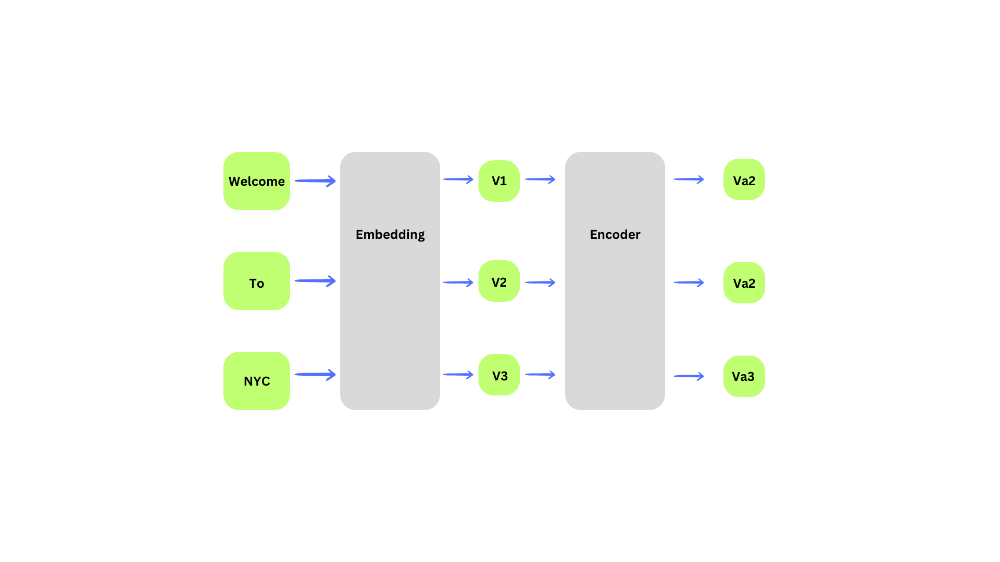

Introduction:
In this series I wiil cover notes I took from the Hugging Face NLP course with code snippets and examples.
Course Overview:
- In this course we will have 9 Chapters
- From chapter 1 to 4 we will cover the main conceptsof
**Transformers**library:- How transformer models works
- How to use a model from Hugging Face
Hub - How to fine-tune it on your dataset and share the result
- Chapter 5 to 8 covers the basics of HF
DatasetsandTokenizer
Natural Lannguage Processing:
- NLP is the field of linguistic and Machine Learning where we focus of understanding everything related to human language
- NLP use cases:
- Classifying Whole sentence:
- sentiments of a review/tweets
- detecting spam
- measuring the correctness of a sentence grammatically
- relation between 2 sentence
- Classifying each word in a sentence:
- classifying the components of a sentence (noun, verb..)
- Generating Text context
- Extracting answers from text
- Classifying Whole sentence:
Transformers: What can they do?
- Many companies uses transformers model to solve different problems relating to text and words
- Transformers library is an open source tool to share and download models to taclle different kind of problems: Text, Audio, VIT (vision-transformer)..
- The Transformers Library provides the functionality to create and use these shared model
Pipeline Function:
- Pipeline is the most High-Level API of the Transformers library
- It’s an end-2-end object That provides all necessary steps in order to perform an NLP task on a given text 
- Pre-precessing steps requires tranformming text into it’s numerical representation, so the model can process it
- Pipeline can perform many tasks:
- Sentiment_analysis: Analys sentiment of a text:

- Here we see that we get a sentiment score for the sentence we provide
- Although we didn’t provide any model or pre-processing, the pipeline did all the work for us
- Here’s some more tasks:
- Zero-shot-Classificatiom: label the topic of a text

- Mask filling:
- There’s many pipeline tasks:
- feature-extraction (get the vector representation of a text)
- fill-mask
- ner (named entity recognition)
- question-answering
- sentiment-analysis
- summarization
- text-generation
- translation
- zero-shot-classification
General Architecture:
- Transformer model is usually composed of 2 blocks:
- Encoder: the encoder receives an input and builds representation of it
- Decoder: Uses the encoder representation along with other inputs to generate a target sequence 
- Although, each of this parts can be used independently
- Encoder_only Models: For tasks that requires understanding of the input
- Decoder_only Models: for generative tasks
Attention Layer:
- the most important part of the transformer architecture is the attention concept
- The attention layer helps the model to pay more attention to some words while processing sentences and performing tasks
Architecture VS Checkpoint:
- Architceture: is the skelton of the model, the defition of each and each operation that happens within the model
- Chekcpoint: Are the weights that will be loaded in a given architecture
Encoder Models:
- Encoder architecture was only the encoder block of a transformer architecture
- After creating embeddings vectors of the input sentence, the attention layer receives it 
- First we process our sentence into the
Embeddinglayer, which will output some numerical representation of each wordV1,V2,V3 - Then the
Encoderblock will perform the attention mechanism on each word vector, and output vectors that has information related to their contextVa1,Va2,Va3
Decoder Models:
- In general the decoder works exactly like encoder: turning words into word vectors or what will call later feature tensors
- The main difference between the 2 blocks is the attention mechanism
- the decoder utilize what called the masked attention
- masked attention means basically masking the next word and allowing the decoder to only access previous and current words
- The pretraining of decoder models usually revolves around predicting the next word in the sentence.